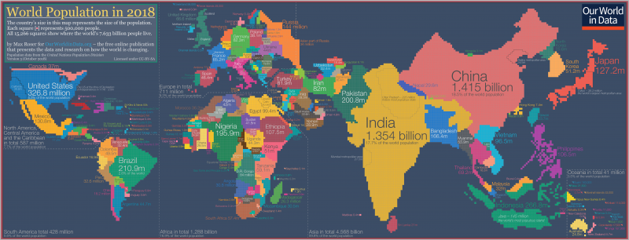

Edoardo Ottavianelli.
Software Developer.
Edoardo Ottavianelli, Computer Science Student at Sapienza University.
Passionate about Computing, Nature and the whole sphere of Science.
How does Information Technology help fight climate change?
Author: Edoardo Ottavianelli16/09/2019
Introduction
What is Climate Change? We often hear about this word, especially in the latest year with the birth of Fridays For Future [1], the organization founded by the activist Greta Thunberg.
The whole Scientific Community agrees on it, the climate change is happening.As we can read on a paper from UNFCCC [2]:“Climate change in IPCC usage refers to a change in the state of the climate that can be identified (e.g. using statistical tests) by changes in the mean and/or the variability of its properties, and that persists for an extended period, typically decades or longer. It refers to any change in climate over time, whether due to natural variability or as a result of human activity. United Nations Framework Convention on Climate Change February 2011. This usage differs from that in the United Nations Framework Convention on Climate Change (UNFCCC), where climate change refers to a change of climate that is attributed directly or indirectly to human activity that alters the composition of the global atmosphere and that is in addition to natural climate variability observed over comparable time periods.”
Since the mid-20th century Scientists observe the earth status (temperatures, winds, CO2 emissions, greenhouse gases…) and the world changed in that time.The first important change is the world population number. We can see in this chart how is grown in the last 12.000 years.
You can see the ‘ice hockey stick’, so how impressive is the growth in the last 120 years (1% of the total). The causes are multiple, better healthcare, less and less wars, innovation in all branches of Science took the welfare in our lives. That number is expected to grow, according to Our World in Data, reaching 9 billion in 2050 and 10,9 billion in 2100 [3].
This can be a problem, in fact, “There is no way to produce enough meat for 9 billion people” said Bill Gates in a 2013 post [4]. Let’s see also how the population is distributed.
2018 World Population Distribution Map [5]:

Another big problem is the energy the population needs. We use energy for every action we do, even the simplest. In the 2018 the world energy consumption was 13.978 Mtoe (Million Tonnes of Oil Equivalent) [6], according to EnerData [7].
There was as acceleration in energy consumption in 2018 (+2.3%) driven by high growth in electricity and gas demand.
We consume much more natural resources than we should. The earth is not at our pace and consumption exceeds production.
On August 1st, the world touched the Earth Overshoot Day, that is the day when we consumed all the resources that the planet can regenerate in a year. For the moment we are consuming energy at a rate of 1,7 earths.
The major part of this energy isn’t eco-friendly, in fact in Europe, as we can read from EuroStat website [8], “In 2017 renewable energy represented 17,5 % of energy consumed in the EU, on a path to the 2020 target of 20 %.”
This consumption, and obviously production, means a lot of CO2 (Carbon Dioxide) distributed in nature.
Continuing reading the EuroStat website, “Energy-related CO2 emissions rose 1,7% to a historic high of 33,1 Gt CO2 (a gigaton is equivalent to a billion metric tons). While emissions from all fossil fuels increased, the power sector accounted for nearly two-thirds of emissions growth. Coal use in power alone surpassed 10 Gt CO2, mostly in Asia.”.
Regarding IT (by now stands for ‘Information Technology’), all the Hardware we use products a lot of heat and CO2 emission.
Around 10% of the world’s total electricity consumption is being used by the Internet, according to a recent research report from Swedish KTH [9].
So... now the main question is: ‘Is all this energy consumption worth it?’
The strength of IT
The scientists need a lot of hardware, energy, money, time and IT expertise to produce the data they need. If we have all the data I’ve reported over here, it’s thanks to IT.
They use computers to create, store, edit and operate a huge amount of data.
You can see here a geo-scientific visual model that created a simulation that shows the water vapor and precipitation of 2009 (NCAR Vislab).
This simulation is only one of the million applications of IT in the Science. They are useful for a better understanding of the world and the many variables that man adds and modifies.
They handle data about movements of terrestrial plates, earthquakes, temperature changes, health of various environmental ecosystems, melting of glaciers, production of waste material ...
So, apparently yes, it is worth it.
But as I said before, the IT consumes a huge amount of energy, but if companies are avant-garde and have an interest in not ruining the planet, this is not necessarily a problem.
Let us take Google as example, 100% of the energy for global operation it uses is renewable [10].
A lot of IT companies are switching their energy consumption by fossil-fuel to renewable.
Bill Gates in 2016, along with some of the world’s richest people, have launched a fund to invest in solutions driven by technology. It will bring together governments and research institutions and billionaire investors who will try to limit climate change.
It’s called ‘Breakthrough Energy’ [11]. Its objectives concern five major themes [12]:
- Electricity
- How we can deliver reliable, affordable zero-carbon electricity to the world?’
- Transportation
- ‘How can we get around our communities and the world without emitting carbon?’
- Agriculture
- ‘How can we feed the planet without contributing to climate change?’
- Manufacturing
- ‘How can we make everything we use without emitting greenhouse gases?’
- Buildings
- ‘How can we eliminate emissions from our homes, offices, hospitals and schools?’
Members of the Breakthrough Energy, which numbers among its members Jeff Bezos (Amazon), Jack Ma (Ali Baba Group) and Richard Branson, have committed to investing more than 1 billion US Dollar in new technologies in the next 20 years.
In particular, three of these sectors are very dangerous to the planet: : Electricity, Transportation and Manufacturing.
Electricity production and distribution represents the 40% of global CO2 emission. This particularly because the 80% of electricity distributed is no-renewable.
The ‘Smart Grid’ plan is a theory that try to reduce the GHG (Greenhouse Emission) emission and optimize the electricity sector. It provides optimization on 5 points. They are Production, Market, Transmission, Distribution and Consumer.
On Production, obviously we have to change the electricity source (by non-renewable to renewable) and the implants size.
On Market, it suggests to create a very efficient electricity web. Less centralization and more large distribution.
As said yet, on Distribution, instead of large arteries, small capillaries.
Today the Transmission is unidirectional. It suggests a transmission bidirectional.
The most power step, the Consumer. Putting small electricity sources on/in our houses and with all the points said before, we aren’t just consumers, but we can produce also electricity, and distribute it when it’s in overabundance.
Transportation today represents 23% of global CO2 emission. As we saw over here, the population is growing and this means also the transport need will be higher.
In fact, the number of private owned motorcars is expected to double to 2 billion by 2050, according to the World Bank Data[13] the value of global emission for transportation will be the 33%.
At the moment, the electric cars are too much expensive for the middle-people and the batteries not very efficient.
There are many algorithms to increase transport efficiency.
They are based on real world data and, using computational theory, try to make efficient the movement of a body from a point X to a point Y keeping in mind many variables such as weight, distance, height difference, traffic, aggregates of objects (or people) to move in the same direction.
Here an example [14].
The other very dangerous to the planet sector is manufacturing.
The industries represent the 30% of CO2 global emission.
Global spending on robotics is expected to reach 67 billion US Dollar by 2025, of which 24,4 billion will be in the manufacturing. Industries are fundamental to the well-being of a country.
Lately many robots have been born to help the industries in the production of products and services.
There are driverless cars in some countries of America, such as California, Texas and Washington.
Now Amazon has around 100.000 robots and 650.000 humans.
Other important technological tools for companies are 3D printers, the whole ecosystem of the Internet of things and complex calculation systems for data prediction.
Other honorable mentions for IT innovation that take benefits to the planet go to:
- Drones and crowdsourcing help monitor forest health and detect illegal logging
- Protecting the world's forests is our task, we must keep them as intact as possible over time. They provide oxygen, food and water that serves to survive not only us humans, but also animals. The World Research Institute has developed GFW (Global Forest Watch), an online forest monitoring system. It allows anyone to analyze the state of the forests in analysis, download data from local areas and alarm fires or other problems.
- AI to track wildlife
- Remote sensing in planning and monitoring
Conclusions
How does Information Technology help fight climate change?
The Global eSustainability Initiative and the Climate Group published a chart that shows how much the IT could help the Earth [19].
Possible IT-enabled savings in emissions 2020, gigatons of CO2 equivalents:
| Sector | Savings |
| Smart Logistics | 1.52 |
| Smart Buildings | 1.68 |
| Tele-working | 0.22 |
| Smart grid | 2.03 |
| Smart motors and industrial processes | 0.97 |
| Transport optimization | 0.60 |
| Video-conferencing | 0.14 |
| Other | 0.66 | Total | 7.8 |
Total=7.8 gigatons of CO2 equivalents.
On around 33 gigatons of CO2 it’s a good improvement.
Even if these data aren’t completely correct, it’s obviously that the IT could help us in the future and it’s only our advantage to innovating and spending on it.
The innovation that IT will bring will increasingly reduce unnecessary energy consumption.
References
- https://www.fridaysforfuture.org/
- https://unfccc.int/
- https://ourworldindata.org/uploads/2019/06/2019-Revision-%E2%80%93-World-Population-Growth-1700-2100.png
- https://www.gatesnotes.com/About-Bill-Gates/Future-of-Food
- https://ourworldindata.org/uploads/2018/09/Population-cartogram_World-2.png
- https://yearbook.enerdata.net/total-energy/world-consumption-statistics.html
- https://www.enerdata.net
- https://ec.europa.eu/eurostat/statistics-explained/index.php?title=Renewable_energy_statistics
- https://www.kth.se/en
- https://sustainability.google/environment/
- http://www.b-t.energy/
- http://www.b-t.energy/landscape/
- https://www.worldbank.org/en/news/press-release/2016/05/05/leaders-call-for-global-action-to-reduce-transports-climate-footprint
- https://www.researchgate.net/publication/272295180_The_reduction_of_CO2_emissions_Transport_optimization_approach_to_decrease_the_Vehicle_Miles_Travelled
- http://wwf.org/
- https://www.intel.com/content/www/us/en/homepage.html
- https://www.jpl.nasa.gov/
- http://www.ucla.edu/
- https://www.theclimategroup.org/